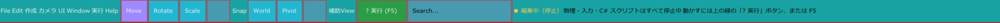

ツールバーと実行状態の表示
メニューバーと同じいちばん上の行の、メニューの右側に並ぶボタン群です。オブジェクトを動かす道具（ギズモ）の切り替えと、ゲームの実行・停止を行います。右端には、今エディターが編集中なのか実行中なのかを示す文字が出ます。

こんなときに使う
- 選んだ物を、動かす・回す・大きさを変える道具を切り替えたいとき（Move / Rotate / Scale）
- 決まった刻みで、きっちり動かしたり回したりしたいとき（Snap）
- 傾いた物を、その物の向きに沿って動かしたいとき（Local）
- ゲームを実行・一時停止・停止したいとき
- メニューのどこにあるか分からない機能を、名前で探したいとき（Search...）
並び順
左から次の順に並びます。項目 7〜9 は条件を満たしたときだけ表示されます。
| 順 | 表示 | 種類 | 表示される条件 |
|---|---|---|---|
| 1 | Move | ボタン | 常に |
| 2 | Rotate | ボタン | 常に |
| 3 | Scale | ボタン | 常に |
| 4 | □ Snap | チェックボックス | 常に |
| 5 | World または Local | ボタン | 常に |
| 6 | Pivot または Pivot:ON | ボタン | 常に |
| 7〜9 | 面Snap、頂点Snap、辺Snap | ボタン | Pivot:ON で、選択中の GameObject に Pivot コンポーネントがあるとき |
| 10 | □ 補助View | チェックボックス | 常に |
| 11 | ▶ 実行 (F5) | 緑のボタン | 実行していないとき |
| 11 | … 読み込み中 | 緑のボタン（押しても何も起きない） | 実行の準備をしている間 |
| 11〜12 | ❚❚ 一時停止（または ▶ 再開）と ■ 停止 | 黄色と赤のボタン | 実行中 |
| 13 | Search... | 入力欄 | この行の残りの幅が 280 ピクセルより広いとき |
チェックボックスは、四角が左、名前が右です。画像で「Snap」や「補助View」の左にある空の四角がチェックボックスで、クリックするとチェックが付きます。
Move・Rotate・Scale（ギズモの切り替え）
シーンビューで選択したオブジェクトに表示される操作用の取っ手（ギズモ）の種類を切り替えます。今選ばれているボタンは、押したときの色のままになります。
| ボタン | 既定のショートカット | ギズモの形 | 操作 |
|---|---|---|---|
| Move | Shift+W | 軸の線の先端が三角の矢印。軸の間に半透明の四角（平面）、中心に丸 | 軸をドラッグすると、その方向へ動きます。半透明の四角をドラッグすると、その平面の中で動きます。 |
| Rotate | Shift+E | 軸のまわりの円と、画面に向いた外側の円 | 円周をつかんで、円に沿って引くと回ります。 |
| Scale | Shift+R | 軸の線の先端が丸。中心にも丸 | 軸をドラッグすると、その軸の方向だけ伸び縮みします。 |
軸の色は X が赤、Y が緑、Z が青です。マウスを乗せている部分はオレンジになります。ボタンにマウスを乗せたときの説明には「先端が丸」（Move）「先端が四角」（Scale）と出ますが、実際に描かれる形は上の表のとおりです。
どのギズモも、ドラッグしている途中で Esc を押すと取り消せます。
Snap
チェックを付けると、ギズモでドラッグした量が一定の刻みに丸められます。移動・回転・拡縮のどれにも効きます。
回転の刻みは、シーンビュー上部の 回転刻み（1度、5度、10度、15度、30度、45度、90度）で選びます。Snap にチェックが無いときは、この選択欄は薄く表示され、選べません。詳しくはシーンビューを見てください。
World と Local
ギズモの軸の向きを切り替えるボタンです。押すたびに表示が World と Local で入れ替わります。表示されている名前が、今の状態です。
- World：ワールド座標の軸に固定します。オブジェクトが傾いていても、軸は常にシーン全体の上下・左右・前後を向きます。
- Local：選択しているオブジェクトの回転に合わせて軸も傾きます。傾いたオブジェクトを「そのオブジェクトにとっての前」へ動かしたいときに使います。
Pivot
回転や拡縮の中心になる基準点（Pivot）を編集するためのボタンです。
Pivot コンポーネントがある状態で押すと、表示が Pivot:ON になり、右に次の 3 つのボタンが増えます。Pivot:ON の間は、Transform（位置・回転・拡大率）を動かさずに、基準点だけを動かせます。
| ボタン | 働き |
|---|---|
| 面Snap | 基準点を、選択しているメッシュの面に吸着させます。 |
| 頂点Snap | 基準点を、選択しているメッシュの頂点に吸着させます。 |
| 辺Snap | 基準点を、メッシュの当たり判定用の三角形の辺に正確に吸着させます。 |
もう一度押すと Pivot に戻り、3 つのボタンは消えます。
補助View
マウスを乗せると「Scene View の右側へ Front / Side / Top を重ねて表示する。」と説明が出るチェックボックスです。
実行ボタン
ほかのボタンと区別しやすいように、区切りの右に色付きで置かれています。状態によって次のように変わります。
| 状態 | 表示 | 押したとき |
|---|---|---|
| 編集中 | 緑の ▶ 実行 (F5) | ゲームを実行します。実行用のコピーが動くので、編集中のシーンは変わりません。C# スクリプトの Update は、実行してから初めて動きます。 |
| 実行の準備中 | 緑の … 読み込み中 | 何も起きません。準備の進み具合は画面中央に表示されます。 |
| 実行中 | 黄色の ❚❚ 一時停止 | ゲームを一時停止します。編集の状態には戻りません。 |
| 一時停止中 | 黄色の ▶ 再開 | 一時停止したところから続けます。 |
| 実行中・一時停止中 | 赤の ■ 停止 | 編集の状態に戻ります。実行中に動いた位置や、実行中に生まれた物はすべて捨てられます。 |
ボタンの (F5) の部分は、Window > キー割り当て で「実行」に割り当てたキーが表示されます。割り当てを消すと (F5) の部分も消えます。
Search...（機能検索）
エディターの機能を名前で探して呼び出す入力欄です。文字を入れると、欄の下に 機能検索結果 の一覧が出ます。項目をクリックすると、その機能が実行され、入力欄は空に戻ります。
探せる項目と、ヒットするキーワードの例は次のとおりです。英字の大文字と小文字は区別しません。
| 表示される項目 | キーワードの例 | 選んだとき |
|---|---|---|
| ワールドを編集 | world、ワールド、背景 | インスペクターにワールドの設定を出します。 |
| カメラを編集 | camera、カメラ、視点 | インスペクターにカメラの設定を出します。 |
| 操作対象 GameObject を選択 | player、プレイヤー、操作、キャラクター | 操作対象の GameObject を選択します。設定されていないときは「操作対象 GameObject が設定されていません」と表示されます。 |
| 描画設定を開く | render、描画、shader | インスペクターに描画設定を出します。 |
| ポスト処理を開く | post、ポスト、bloom、fxaa | インスペクターにポスト処理の設定を出します。 |
| Editor入力キャプチャを切り替える | input、入力、キャプチャ | エディターの入力キャプチャを切り替えます。 |
| 配置Workspaceへ、モデリングWorkspaceへ、アニメーションWorkspaceへ、レンダリングWorkspaceへ、UI Workspaceへ、Motion Workspaceへ | workspace、配置、モデリング、アニメーション、レンダリング、ui、motion、タイムライン | その Workspace に切り替えます。 |
| シェーダー調整テーブルへ | shader、material、シェーダー、材質 | シェーダー調整の Workspace に切り替えます。 |
| 全画面表示を切り替える | fullscreen、全画面 | ウィンドウの全画面表示を切り替えます。 |
エディターのウィンドウが狭く、この行に余裕が無いときは Search... 欄そのものが表示されません。
実行状態の表示
ツールバーの右に、今の状態が色付きの文字で表示されます。1 行目が状態、続く薄い文字が説明です。
| 状態 | 表示（色） | 続く説明 |
|---|---|---|
| 編集中 | ■ 編集中（停止）（黄） | 「物理・入力・C# スクリプトはすべて停止中」「動かすには上の緑の「▶ 実行」ボタン、または F5」 |
| 実行中 | ▶ 実行中（緑） | 「実行シーンで動作中 / 入力有効 / C# の Update が回っています」 |
| 一時停止中 | ❚❚ 一時停止中（黄） | 「実行シーンを一時停止中」 |
| 編集シーンをそのまま実行しているとき | ▶ 実行中（編集シーン）（水色） | 「編集シーンをそのまま実行中 / 入力有効」 |
「編集中」の説明に出る「F5」は、「実行」に割り当てたキーです。
使い方の例
物を 90 度ずつ回す
- 回したい物を選び、Rotate（Shift+E）を押します。
- Snap にチェックを付け、シーンビュー上部の 回転刻み を 90度 にします。
- 回したい軸の円をドラッグします。90 度ごとに止まります。
傾いた板の上に沿って物を動かす
- 板と同じ向きに傾けた物を選びます。
- World のボタンを押して Local に切り替え、Move（Shift+W）にします。
- 軸が物の傾きに合わせて表示されるので、その軸をドラッグして動かします。
ワールドの設定を名前で探して開く
- Search... に
worldと入れます。 - 一覧の ワールドを編集 を選ぶと、インスペクターにワールドの設定が出ます。